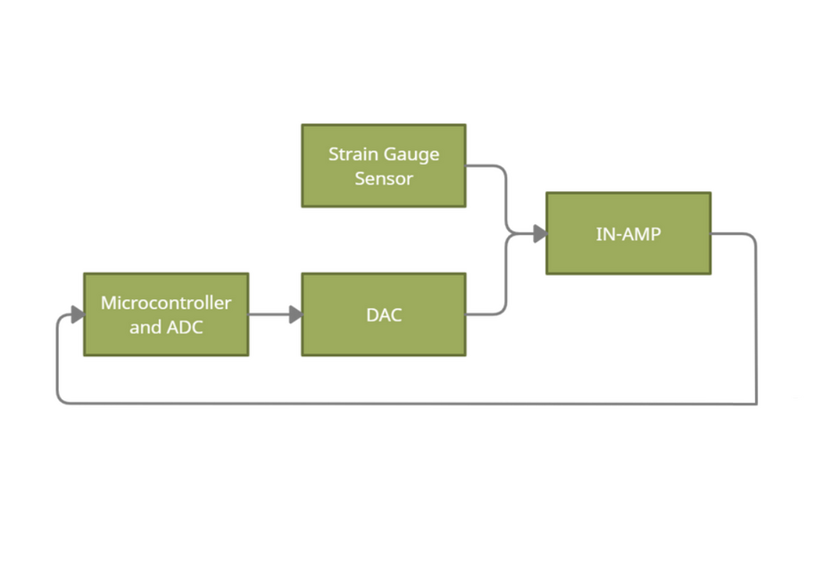
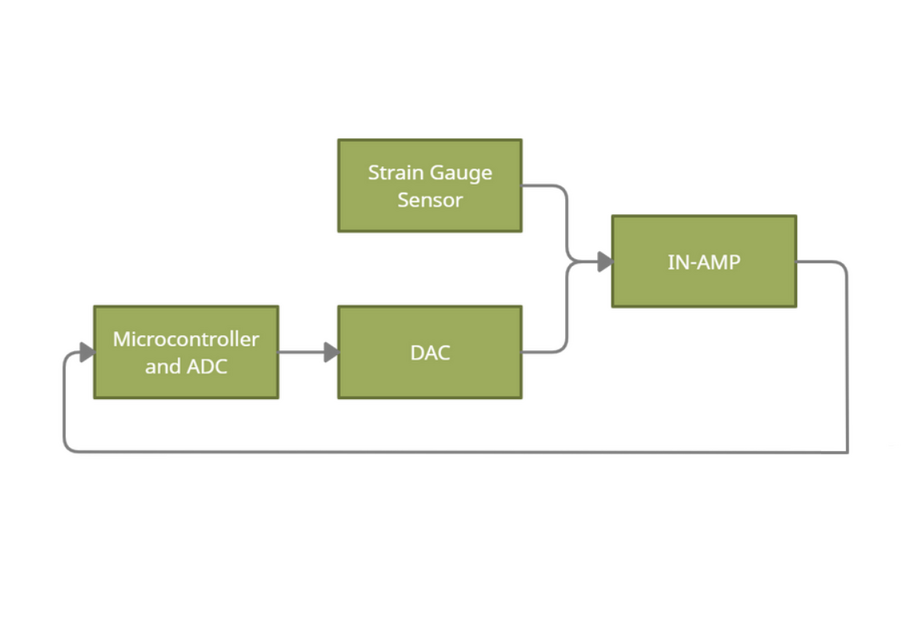
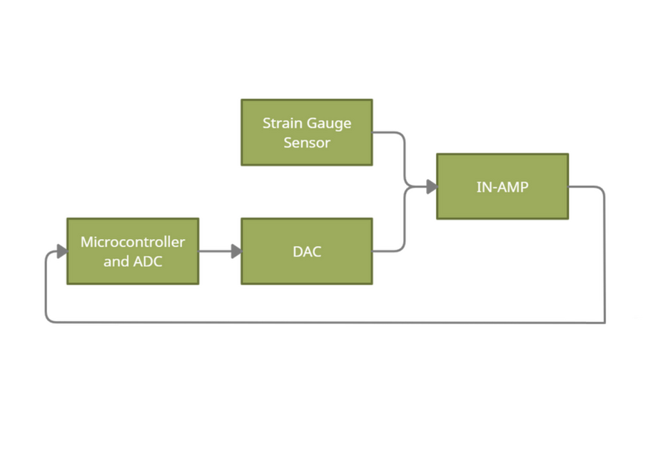

I designed, programmed, and tested a skin sensor.
This design can easily detect minuscule touches
across multiple sensors. The DAC is calibrated to
find the sensor's resting voltage. Changes in the
sensor result in a change in voltage from the
setpoint of the DAC.
I also programmed a simulation in python to
determine the gain, ADC & DAC accuracy, and
time required for calibration.
https://github.com/daynual/sensor-simulation
